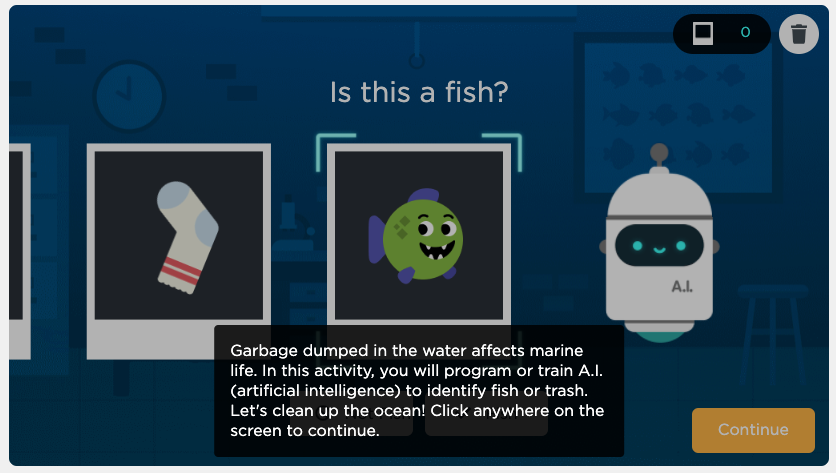

Lesson 3 - Machine Learning
At the end of this lesson, you will be able to:
- Explain how Machine Learning provides intelligence to AI.
- Train a Machine Learning model to classify 'fish' and 'not fish'.
- Explain how bias can influence machine learning models and the societal impacts of this bias.
Machine learning
- Machine learning is a part of AI which provides intelligence to machines with the ability to automatically learn with experiences without being explicitly programmed.
- It is primarily concerned with the design and development of algorithms that allow the system to learn from historical data.
- Machine Learning is based on the idea that machines can learn from past data, identify patterns, and make decisions using algorithms.
- Example:
Given the history of home sales in a city, you could use machine learning to create a model that is able to predict the value of a different home in that same city.
Questions to think about:
Where have you seen or experienced AI in your lives? What are some ideas on possible future applications of AI? What would happen if a machine learning algorithm was biased in some way? What possible impacts could there be on people who relied on the predictions made by the algorithm?
Training AI activity
Machine learning refers to a computer that can recognize patterns and make decisions without being explicitly programmed. In this activity, you’re going to supply the data to train your own machine learning model. Imagine an ocean that contains creatures like fish, but also contains trash dumped by humans. What if we could train a computer to tell the difference and then use that technology to help clean the ocean?
Navigate to Code.org AI for Oceans activity. Complete each stage and watch the two videos 'Training Data & Bias' and 'Impact on Society'.

In the next lesson, you will learn about the different types of machine learning.
 Complete on your own!
Complete on your own!
Open up Unit 9 Lesson 2 - Replika Chatbot discussion.
Directions:
- Replika is a Machine Learning chatbot that is programmed to be your friend and help you whenever you need it.
- Visit https://replika.ai/
- Create your own Replica.
- Share your experience.
- What do you think the motive is behind creating Replika?